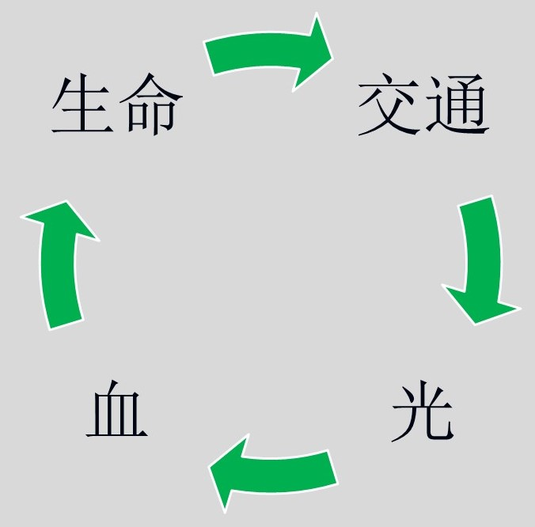

在基督徒的生活中，活在与主的交通里是非常紧要而实际的。凡羡慕、追求生命长进的人，也没有不注意这件事的。
一、交通的意义
“我们的交通，又是与父并与祂儿子耶稣基督所有的。”约壹一3
“交通”一辞，在圣经里的意思是一同参与、共同分享。当我们信入神儿子之时，祂就进到我们里面，使我们得着神圣的生命。结果，这生命在我们里面流通，我们与神之间便产生了一种来往、交流。
这交通是由我们重生之灵里的那灵所实施的，所以它也称为“圣灵的交通”。
“愿主耶稣基督的恩，神的爱，圣灵的交通，与你们众人同在。”林后十三14
因此，“与主交通”就是照着我们灵里的圣灵，在神圣生命的交流里，与祂有亲密、直接的接触。这会保守我们有分并享受神圣的爱与恩典。
二、交通的生活─住在主里面
基督徒的生活，就是一个交通的生活。没有一位基督徒离开神，向神独立，而能过一个正常的生活。这好比枝子与树的关系：
“我〔主〕是葡萄树，你们是枝子；住在我里面的，我也住在他里面，…离了我，你们就不能作什么。”约十五5
我们与主的互住，就是彼此的交通。每一位基督里的信徒，都是主这棵真葡萄树上的枝子。我们一旦看见这个事实，就需要维持我们与主之间的交通，免得我们无法享受祂丰富的供应。
三、交通的条件
根据神的话和信徒的经历，我们与主的交通是会中断的。因此，我们要享受与主的交通，就需要履行一些条件、义务。
1 在光中生活行动
“但我们若在光中行，如同神在光中，就彼此有交通。”约壹一7
神就是光，我们要与祂有交通，就必须在光中；要住在光中，则有赖于我们住在主里面。只要我们一不在光中，交通就会立刻中断，而感到不安、虚空、黑暗。
2 认罪
“我们若认自己的罪，神是信实的，是公义的，必要赦免我们的罪，洗净我们一切的不义。”约壹一9
一切的不义都是罪；而罪指明我们错误的行为，得罪了神或人。
我们一旦犯了罪，就需要向神承认；这样神就会照着祂的话，并基于耶稣之血的救赎，来赦免我们，恢复我们与祂中断的交通，使我们能够有一颗无亏的良心，在不受打岔的交通里来享受祂。
3 爱神并爱弟兄
“那爱他弟兄的，就住在光中，在他并没有绊跌的缘由。”约壹二10
神是光，也是爱。当我们住在神里面，自然会产生对弟兄的爱，这表明我们是住在光中。
四、交通的实行
基督徒的问题，差不多都是出在交通上。这一个功课，是所有蒙恩的人所最需要学习的。
现在，我们要实际的来看如何与主交通。根据经历，这大部分是在我们的祷告和读经里。这两个专题在前面几课已有解说，这里我们只综合来讲，其中包含有交通的程序。
1 祷告
祷告是为着接触神、与神交通，并不重在为事物求讨。有几点诀窍：
（1）从心里说真话
当你到神面前去，要先把心思安定下来，然后照着里面的感觉来祷告。不要造作辞句，也无须顾虑对错，就像小孩子到父母跟前，心里想什么，口里就说什么，句句真话。
（2）不要顾到记忆
当你和神交通的时候，不要光记着要祷告的事，却一点接触不到神；也不要被事务缠累而失去神的同在。
（3）要蒙光照，靠着血认罪
你在祷告中若感觉有罪，就该靠着耶稣的血，一件一件彻底承认，求神赦免。
（4）赞美感谢
你把罪认过了，也认透了，往往会觉得要向神赞美、感谢，这时就要尽情发表出来。
2 读经
为着交通的读经，要记住几点：
（1）不为研究查考
读经时避开仅是知识的研读，要轻省而自然的向神而去。
（2）要专心寻求主
我们的主就在祂的话里，祂自己也就是这话；你读经就是来接触这活的人位。
（3）要感到主话里的滋润和供应
当你用灵来读主的话，一直保持与主的接触时，里头一定有明亮、饱足的感觉。
（4）接受灵感而化作祷告
在这种交通的读经里，常常容易摸着神的感动。此时，将神的感动，化作向神的祷告，就是人与神最好的交通。
此外，在实行上还有几个实际的点：
3 时间
（1）无间时刻
基督徒是每时每刻都不能与神隔绝的，不论早晚都该操练与主交通。
（2）划定时间
一面我们时刻活在交通中，一面我们也要划定时间，专一来与主交通。最好的时间是在清晨，晚上能再有一点时间也是很好，其他时间也可以。这能叫我们的交通生活大得益处。
4 地点
（1）不分境地
无论是在家里、会所、学校、办公室，走在路上，坐在车上…，任何地方都能与主交通。
（2）特定地点
虽说那里都可以实行交通，但有时为着不受打岔，且能专一、深入，找一个清静的地点，也是非常需要的。
五、交通的功效
可从两面来看：
1 消极方面：
一步一步除去我们身上不该有的东西，主要是罪、世界和旧人。我们若是与主有够好的交通，就没有一次不在消极方面有所除去。
“但我们若在光中行，如同神在光中，就彼此有交通，祂儿子耶稣的血也洗净我们一切的罪。”约壹一7
2 积极方面：
一点一点把神的成分加增到我们里面。这好比我们身体里头新陈代谢的律，是一直除旧换新的。我们越是活在交通里，这个作用就越厉害。
“神是信实的，你们乃是为祂所召，进入了祂儿子我们主耶稣基督的交通。”林前一9
当我们越进入与主的交通，就越能享受祂作神赐给我们的分，而被祂充满、占有。
根据这两方面的功效，我们可以看见，基督徒的长进、变化，全系在与主的交通上。
现在，我们要把与主交通的功效总结于：
一个属灵生活的循环
我们从神所得着的神圣生命，产生了神圣生命的交通，神圣生命的交通带进神圣的光，而神圣的光增强对耶稣之血的需要，使我们更多得着神圣的生命。
神圣的生命
神圣生命的交通
神圣的光
耶稣之血的洁净

这样的循环，带我们在神圣生命的长大上向前，直到我们达到生命的成熟。